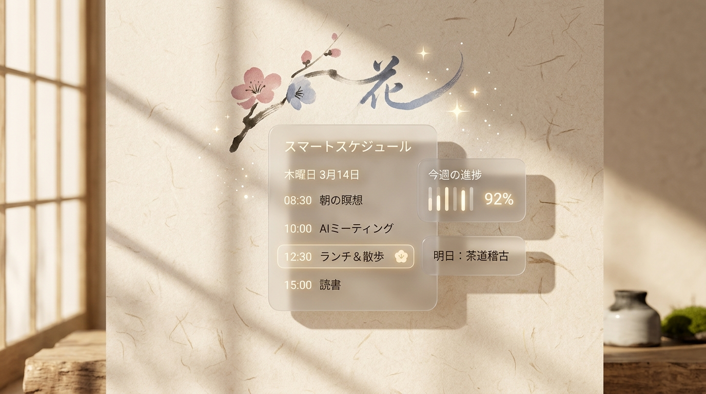

01
一屏看全一周
周一到周日七列,当天所有节次竖着排,不用来回翻页。右上角一切换就是日视图,卡片流转、每 30 秒更新倒数;表头常驻当前气温与天气。
Android 课程表
给国内大学生用的 Android 课程表。打开就是一整周,横看七天、竖看节次,不用来回翻页。 四种办法能把课表弄进来,提醒准点又不吵。桌面小组件放在那儿,应用都不用打开。

界面
一抹强调色配三档中性,剩下的地方留给白。开屏广告和签到这里都没有, 时间轴竖着排,不用横着滚。


它能帮上什么
去掉开屏广告、横向时间轴与花哨社交。只留必要的骨架，让日常步调清晰可循。
01
周一到周日七列,当天所有节次竖着排,不用来回翻页。右上角一切换就是日视图,卡片流转、每 30 秒更新倒数;表头常驻当前气温与天气。
02
页头「✦ 助手」一句话查课、调课、查空堂、调日程或记住偏好。先查再改,对比卡片预览确认后才落库,绝不让幻觉污染课表。
03
原生支持国产手机状态栏胶囊与锁屏实时活动。课前提前量开始常驻一条通知,按分钟推进「还有 N 分钟 → 上课中 → 下课」,下课自动收起。
04
日程页签管有时间的事(待办/活动),铺日历周条与全天时间线;倒计时页签管等着倒数的目标(考试/作业),按还剩几天排,到点精准提醒。
05
全国主流高校教务系统一键同步、手填单门课、粘贴表格/Excel、拍张截图交给 AI 识别。单双周与自定义周次自动归类。
06
每门课自动赋予一层极淡专属色,扫一眼就知道;此刻正在上的课标有强调色。支持自选配色方案档位或在课程编辑页自定义和色。
07
今日课表(4×2)、明日课程(2×2)、下节课(1×1)、日程倒计时(4×2)。不打开应用也能看清安排,显示内容与底色自由配置。
08
登录雨课堂后自动关联班级课程。详情页按时间轴列出公告,课前提醒附带最新一条通知。上课提醒不重复转发,告别消息轰炸。
09
桌面上那个蓝发角色有 9 种生动表情,点一张立刻换。也可以打开轮播,让它按每次打开、每小时或者每天自动更换表情。
10
零广告、零促销、零第三方追踪 SDK。课表默认只存在你自己手机上,不注册也能用。需要换机或备份时再登录账号安全同步。
✦ 智能排课
课表页头的「✦ 助手」随时待命。一句话查课、调课、查空堂、调日程或记住偏好。 严格遵循「先查再改」与本地自检原则,绝不让模型幻觉污染课表。

✦ 课表已检索完毕。周五下午 14:00 - 15:35 为【大学物理实验】（实验楼 302），之后暂无课程安排。
动作已校验就绪，点击「确认执行」写入数据库。
灵动提醒
课前提醒不只是一声响。在支持胶囊的手机上,它化身状态栏灵动胶囊与锁屏实时活动, 原地按分钟步进,绝不反复发通知打扰。
原生适配荣耀灵动胶囊、小米超级岛、OPPO 实况通知等国产胶囊。 一节课只排一个闹钟,从提前量到下课全程安静相伴,通知上可直接取消本节课提醒。
导入
四条路,总有一条省下你敲一整学期的手。导入之后,单双周和自定义周次会自动归类。
选中你的学校,读完适配说明再确认。学校账号在应用内登录,脚本把课程、作息时间和 开学日期读出来,要不要覆盖本地设置由你点头。密码只在这一次登录会话里用, 之后不留在应用数据库。
自己填一门课,补录或者临时调整都靠它。一页表单填到底:星期能多选,一周上几天都行; 节次和周次点一下就好,自定义周次可以逐周勾;时间按节次算或者自己填, 晚间讲座、临时加课用后者。
把 CSV / TSV 粘进来,或者直接选 Excel 文件。表头和中文编码它会自己认; 第 8、9 列填上开始和结束时间,就能生成自定义时间的课程。
接 Google Gemini,也接任意 OpenAI 兼容服务(DeepSeek、通义千问、Kimi、智谱 GLM 都行)。 在设置里填好自己的密钥,上传课表截图,课程和作息就认出来了。 图片直接发给你挑的那家服务商,不经过余课。
设计取向
余课按 Yohaku(余白) 的路子走:把课表当纸,不把界面当装饰。
全局只用一个强调色,默认梅色,另有五色可选。它只出现在「此刻正在上」和选中态 这类真要抢眼的地方。
浅色和深色各一套暖纸面色板,层次全交给明度。
每门课按课名分到一层彩度很低的底色,方便扫读。它不代表任何意思, 课程名照旧写在上面。
没课的位置什么都不画。那片空本身就是「这里没课」。
内置思源宋体和等宽字体,时间和节次排得像表格一样齐。
这也是「余课」这名字的来头:该留白的地方,就留白。
外观与日常
在桌面与锁屏之间，构建最轻盈无感的课表陪伴。
浅色、深色、跟随系统三种。
深色下暖色阶会重置成纯中性灰。低饱和的暖色压在暗底上会发橄榄, 暖意改由纸面色一个人扛。
六个经典和色任选。点击下方色块可实时预览全站强调色切换：
9 张角色图任选,点一张桌面图标立刻跟着换。也可以打开轮播,让它按你定的节奏自己换。
今天要上的课排开,正在上的那节标出来。
今天就能看见明天上什么,不用等到第二天。
下一节课叫什么、几点、在哪。调休的停课补课也照实显示。
待办事项与考试倒计时混合时间线,直观标出剩余天数,不漏掉任何大考与作业。
安装
「设置 → 检查更新」认得你手机上装的是哪种架构,只给你下对应的那一个包。
正在读取最新版本…
近几年的手机基本都是 64 位。
| 架构 | 适合 | 包 |
|---|---|---|
arm64-v8a |
近几年的 64 位机型 | 在 GitHub 下载 |
armeabi-v7a |
老一些的 32 位机型 | 在 GitHub 下载 |
universal |
拿不准就选它,通吃 | 在 GitHub 下载 |
装过旧版本的话直接覆盖安装,课表和设置都留着。Releases 页另有 x86 / x86_64 包。
隐私与数据
这里没有广告,不推促销,也没接第三方广告 SDK。
常见问题
先到「设置 → 提醒可靠性」逐项打开通知、精确闹钟、电池白名单和自启动。 国产系统的省电策略会在后台清掉闹钟,这几项开齐通常就稳了。应用还会定期自检, 把提醒补排回来。
先试「手动表格导入」或者「AI 图片导入」。学校教务系统要是比较通用, 也可以走教务导入里的通用入口,填上教务网址试试。
到「设置 → 作息时间」逐节改成你们学校的。节次能增能删,不限于 12 节; 也可以按开始时间、单节时长、课间和节数自动生成,保存前会校验重叠。 从教务系统导入时,脚本要是读到了学校的作息,会先把「覆盖了什么」写在明面上再应用。
桌面图标由系统缓存,一般几秒就更新了。个别第三方桌面慢一些, 或者要把图标从桌面移除再加回去。
多半是下载了跟你手机架构对不上的安装包,换成通吃包再装。 也可以在「设置 → 检查更新」里让它自己挑,它会按你手机的架构给对应的那一个。
登录同一个账号就同步过去了。没登录的话数据只在本机,卸载或者换机会丢, 建议先注册再迁移。
完全支持！课表自动分配低饱和色彩，确保同课同色且互不冲突。如果想自己调整，可在「设置 → 课表 → 课表显示 → 配色方案」切换柔和/标准/丰富档位，也能在单门课的编辑页从 20 个东方和色预设里挑选，或直接输入十六进制色值（#RRGGBB）。
是的。为了保护隐私并坚持纯粹开源，余课不设中转服务器收集数据。你可以在应用内「设置 → AI 设置」填入自己的 Google Gemini API 密钥或任意 OpenAI 兼容服务（DeepSeek、Kimi、通义千问等）的密钥与端点。密钥加密保存在本地，识别图片与对话直接由设备连向服务商。
在「设置 → 提醒 → 课程提醒」里打开「实时活动胶囊」。支持荣耀灵动胶囊、小米超级岛、OPPO 实况通知等系统级胶囊展示。胶囊不显示时，可前往「设置 → 提醒 → 提醒可靠性」检查系统的实时活动总开关。
默认只推正式版。想第一时间试新功能、也愿意接受偶尔不稳,在「设置 → 接收预发行版」 里打开,手动检查和后台自动检查都会把 RC 一起纳入比较。
开源
想自己构建,或者翻源码看实现,从这里进去。
./gradlew assembleDebug # 调试版(按架构分别产出,另有通吃包)
./gradlew assembleRelease # 发布版(未配置签名时产出未签名 APK)
产物在 app/build/outputs/apk/<buildType>/ 下,
每个 CPU 架构一个 APK,外加一个通吃包。